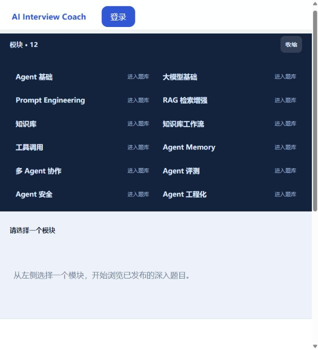
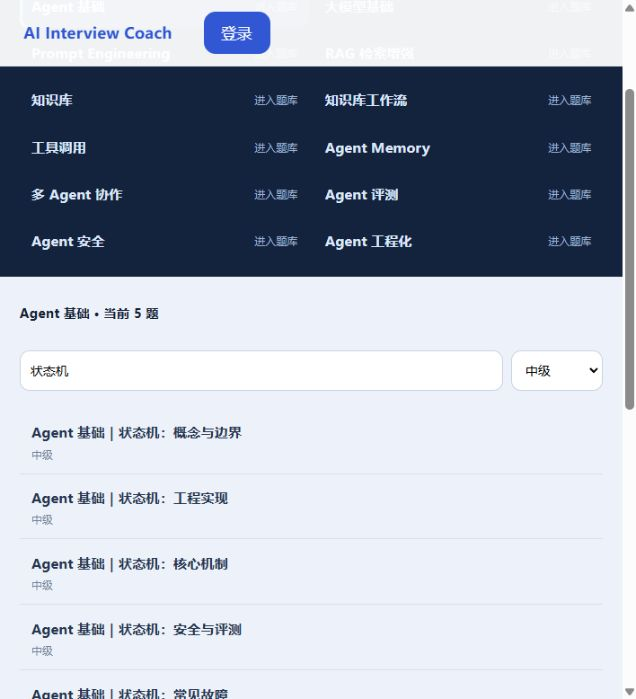
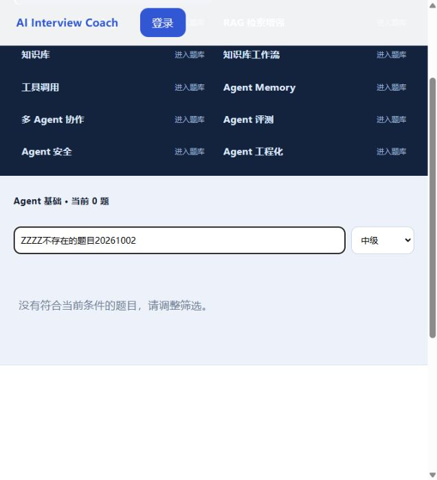
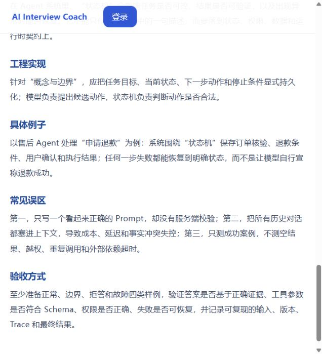

1. 首页与训练入口 通过
步骤与预期：匿名打开首页，能区分文字、语音和题库入口。实际：最初旧登录态失效到登录页，返回首页后标题及三个入口可见。首页文案声称完整闭环，本轮只验证入口，不因此认可闭环。
首页实际截图；已保存并回读。
2026-10-02 · Asia/Shanghai · Codex 实际执行 · 面试项目
本轮查实当前源码、已有技术记录和实际页面。已恢复面试独立通道，并在本对话可见的 Codex 内置浏览器检查首页、公共题库、筛选分页、题目正文及原登录前提。用户选择先完成匿名检查与报告。
连续语音房间 2.0.1 仍是待审设计。自动开场、自动听说、HR 与技术面试官共享上下文、反问与更正没有本轮实现或业务通过证据。已有 v1 逐题链路与新设计分开说明。
8 个业务点的局部计数，不是功能完成率。本轮不计旧报告为新执行；真实收费语音、模型、业务写入未执行。
“源码实现”表示相关页面、用例或接口已核对；“技术检查”明确历史时间与限制；当前业务结果仅来自本轮操作。各模块的用户接受均待确认。
| 业务模块 | 设计与源码现状 | 技术检查证据 | 本轮实际页面 / 使用方法 | 缺口与业务影响 |
|---|---|---|---|---|
| 登录与个人档案 | 复用若依登录、验证码与认证路由。账号中心显示本人基本信息；资料编辑、隐私导出及删除请求写明后续接入。后端计划依赖本人有效档案版本。 | 2026-10-01 缺档案/空题与安全异常定向测试共6条通过；此为 fake JDBC 单测，不证明真实档案流程。 | 本轮文字、语音、账号入口均回原验证码登录页，并保留目标路径。匿名可浏览题库；用户本人可完成原账号登录。 | 登录成功及档案实际内容未复验；新用户自助档案维护未闭合，可能阻碍生成计划。未新建账号或补写档案。 |
| 公共题库与个人答案 | 12模块、搜索、难度、游标分页、已发布详情及个人答案切换/编辑有门户实现；后端有公开目录、草稿版本及治理接口。 | 2026-10-01 原库读取记录为2173发布题/2173规则；本轮仅抽样公开GET，不重新声明全库数量或质量通过。 | 本轮两个模块可读；Agent基础首批与次批各20题，标题无重复；状态机+中级5题；空态及一题正文可读。 | 个人答案写入和编辑/审核/发布未执行；后台治理、隔离及全部题目质量不能从匿名抽样推定。 |
| 面试计划与文字面试 | 已有v1岗位、级别、时长、主题准备页；计划创建/确认、会话开始、回答、追问、暂停、恢复、结束接口及房间实现。当前仍按题推进。 | 2026-09-11有真实文字回答—追问—结束—反馈冒烟历史；2026-10-01定向测试与门户类型/构建通过。本轮不重打包共享产物。 | 本轮文字入口鉴权通过。登录后可进入准备页，实际创建与回答需明确测试数据及写入范围。 | 当前正常训练未复验，用户“文字无法完成”的反馈未关闭；旧闭环不能证明新上下文交流已完成。 |
| 语音识别与题目朗读 | 已有豆包ASR/TTS适配、WebSocket、票据、私有音频存储、final转写确认、题目朗读及文字降级实现；页面仍由用户手动录音/确认。 | 本轮运行两项开关为true，原目录与配置保留。能力GET未登录：HTTP200/业务401，未返回六项检查。历史ASR403和后续首题TTS成功分别保留。 | 语音入口要求原登录。实际识别、声音播放和转写确认未执行；没有自动采集或收费探测。 | 供应商实际连通、物理麦克风、后续题朗读、整场转写确认仍需定向复验；配置开启不足以证明能通话。 |
| 评估与面试反馈 | 后端评估流水线、报告和反馈用例存在；已有反馈页按评分标准显示分项判断、原话引文和不足，生成前须模型处理同意。 | 2026-09-11有既有真实文字反馈单次历史；本轮静态核对页面和GET/POST接口，不做新模型调用。 | 有本人已完成测试会话时可只读回看反馈，本轮缺原登录与明确测试会话。 | 当前报告内容质量、本人权限及新设计全场HR/技术总结未复验；不将页面存在记为报告已通过。 |
| 学习、复练与历史 | 后端有学习计划创建/读取/任务完成/仪表盘用例和练习接口；门户router未提供完整学习、历史或复练页面，反馈页也未连接完整学习闭环。 | 本轮源码盘点；没有本轮对应业务检查或可用页面证据。 | 目前匿名用户可直接阅读题库学习；个性化学习计划和历史复练未作为可交付用户路径确认。 | 从薄弱项到下一次练习的用户闭环不足；后端用例存在不表示前端用户能使用。 |
| 新上下文交流与连续语音 | 完整设计2.0.1（Draft）：HR+技术+协调Agent、反问/更正/澄清、自动开场/播报/听答/接续及总结；图稿是虚构设计示例。 | 无本轮实现、技术或真实业务验证。现有v1路由/房间仍为逐题及手动控制；未据图稿宣称已实现。 | 本轮不把原型或图稿作为实际产品页面展示。 | 需要在唯一设计与任务记录中确定实施切片，并完成真实模型/媒体链路及验收；无法把当前v1入口称为新连续对话功能。 |
共同前提：原库与原密钥沿用；匿名；本对话独立标签；不提交原库业务写入。完整执行前预期、规则版本、字段、步骤与应截图位置见已保存清单。截图格式实际为JPEG；登录图裁切在验证码图像上方，保留验证码字段名称，凭据已清空。
步骤与预期：匿名打开首页，能区分文字、语音和题库入口。实际：最初旧登录态失效到登录页，返回首页后标题及三个入口可见。首页文案声称完整闭环，本轮只验证入口，不因此认可闭环。
首页实际截图；已保存并回读。
依据：题库规格第5节公开读取/固定模块要求，2026-10-01原库读取基线。实际：模块面板12项；Agent基础当前20题，题目标题和中级难度可见，没有普通用户公共新增入口。仅证明抽样已发布内容，不证明全库质量。
步骤：下一批→返回首批→状态机/中级→不匹配关键词回车→大模型基础。预期：筛选结果对应、空态可恢复、分页不重复。实际：两批各20题，页面标题交集0；状态机中级5题；不匹配关键词0题并显示调整筛选提示；切模块清除旧条件并显示20题。
工具首次按辅助树“checkbox”找题失败，DOM实际为button，改用真实按钮后完成核对。“应用筛选”为读屏专用隐藏提交按钮，点击未触发有效更新；搜索输入框回车生效，难度改变也会提交。保留操作差异，不称可见筛选按钮可点击。
样本：Agent基础｜状态机：概念与边界；发布版本1。实际：题干与六段标准答案可读，页面与公开详情GET对应，响应hasUserAnswer=false。未显示他人答案；仅为样本字段观察，不是完整安全审计。
当前面板宽度下三栏纵向排列，正文在题目列表下方，需滚动。最初“07-题目详情.jpg”只拍到列表，未作为正文证据；追加真实滚动图后逐张回读。
预期：未登录应回原登录页面，不绕过验证码。实际：文字准备、语音准备、账号分别转到/login且redirect保留目标；账号/密码/验证码字段呈现。凭据清空，无登录、验证码求解或新账号创建。只证明入口鉴权，登录成功不在通过范围。
两个运行开关true、原录音目录存在；能力GET返回HTTP200、业务401。缺原登录态及对应权限，未获得数据表/存储/加密/票据/识别/合成六项结果，无法操作重新检查并采语音配置截图。页面证据只取得登录前提；必需的配置页截图未取得，不能通过。真实ASR/TTS、麦克风和费用动作未执行。
无原登录态及明确可只读查看的测试会话，房间、刷新恢复和反馈截图未取得。未创建计划、回答、结束或生成报告。2026-09-11单次闭环与用户最新文字失败反馈均保留，不据匿名入口推翻故障。
账号入口鉴权可确认，但缺登录及测试资料，个人页面截图未取得。源码另证实AccountPage后续接入提示、学习后端用例及门户完整学习路由缺口。其业务影响是资料维护、历史和复练路径不完整；源码盘点不计页面通过。
本轮五项局部检查通过、三项受阻、沿用通过0项。检查范围内没有发现新的业务断言失败；最初服务未运行记录为技术失败，恢复后启动检查另列通过。历史识别失败、文字无法完成及其他失败证据未被删除或改为通过。用户接受待确认。
下面图片均由本对话内置浏览器拍摄、保存后回读。没有使用设计图冒充实际页面。




本轮回读用户入口2026.10-r5、仓库入口2026.10-r8、项目规范索引2026.10-r5；验收正文/模板及文档正文2026.10-r4，项目文档组织2026.09-r6。读取只能证明本轮读到了规范，不能证明新会话自动加载或全部行为符合。
启动前面试15173/18091/16391均未监听，原MySQL3306和PostgreSQL5432在运行；协调对话先观察连接拒绝。本轮核对脚本和原配置，执行已授权单项目恢复，未打包、未换包、未迁移或初始化数据库、未新建账号、未关闭语音、未修改其他项目源码或进程、未执行Git写操作。
脱敏运行检查和源文件哈希 · 公开数据GET核对 · 截图、文档及链接核对 · 既有技术记录 · 既有验收记录 · 题库规格 · 已有v1清单 · 唯一设计2.0.1
报告预览只服务本轮脱敏证据目录，绑定本机回环地址。超出证据目录的来源链接用于本地文件审阅；预览服务中这些上级链接不作为可访问网页，需要从Codex文件链接打开。
用户接受：待确认；本轮检查不代用户接受，不宣称上线就绪或发布。